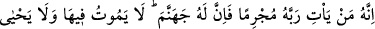
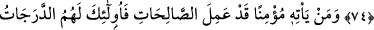
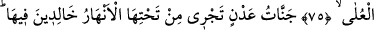
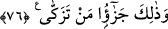
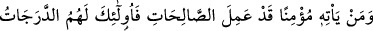
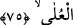

İŞTE ARINANLARIN
MÜKÂFÂTI
74. Şurası muhakkak ki, kim Rabbine günahkâr olarak varırsa, cehennem sırf
onun içindir. O ise orada ne ölür ne de yaşar!
75. Kim de iyi davranışlarda bulunmuş bir mümin olarak O’na varırsa, üstün
dereceler işte sırf bunlar içindir.
76. İçinde ebedî kalacakları, zemininden ırmaklar akan Adn cennetleri! İşte
arınanların mükâfâtı budur.
“Şurası muhakkak ki,” Bu âyet, onlar cihetinden Allah Teâlâ’nın niçin daha hayırlı ve
sürekli olduğunu açıklamaktadır. “kim” kıyâmet gününde “Rabbine” Rabbinin huzuruna
“günahkâr olarak varırsa,” yâni küfür ve isyanlar içinde ölmek sûretiyle günahlarda
ısrarcı olarak ve onlara iyice batmış olarak varırsa “cehennem sırf onun içindir.” Bu
sayılan husûsiyetler, Rabb’inin huzûruna mü’min vasfı ile gelenlere mukâbil olarak
zikredilmiştir.
“O ise orada ne ölür ne de yaşar!” Oraya atılan âsîler için ölüm yoktur ki ölünce
azâbı sona ersin ve rahat etsin. Bu ifâde onun azâbının sürekli olduğunu
vurgulamaktadır. Yine onun için orada istifâde edip faydalanacağı bir hayat da yoktur.
75. Kim de iyi davranışlarda bulunmuş bir mü’min olarak O’na varırsa, üstün
dereceler işte sırf bunlar içindir.
“Kim de iyi davranışlarda” akıl ve nakil delili ile düzgün olduğu bilinen sadaka-i
câriye gibi sâlih amellerde “bulunmuş bir mümin olarak” Hak Teâlâ’ya ve O’nun
katından gelen mûcizelere -ki bizim şâhid olduğumuz mûcizeler de bu cümledendir-
îman etmiş olarak “O’na varırsa, üstün dereceler” yani cennette yüksek dereceler